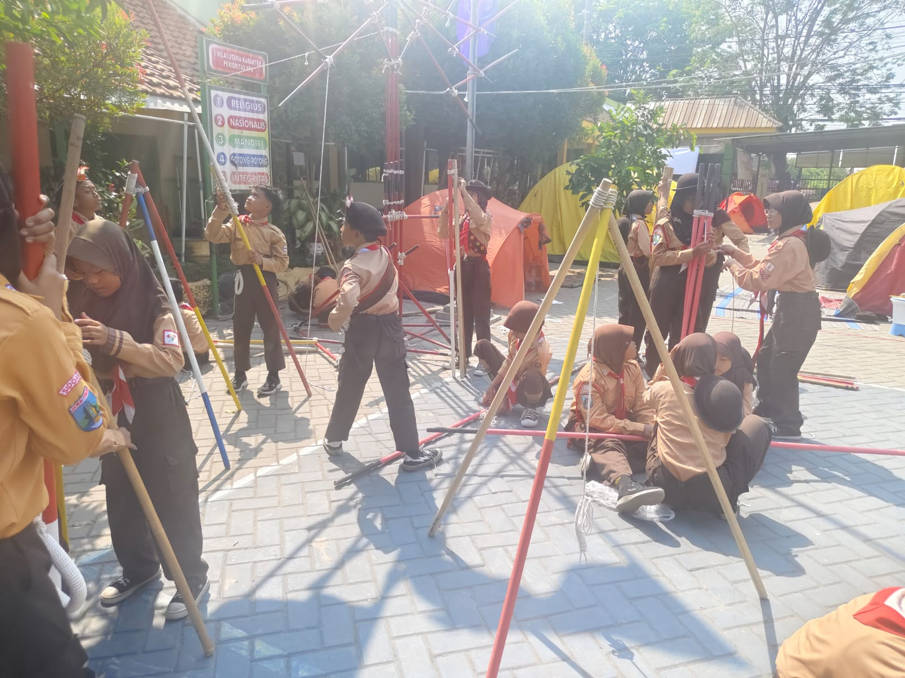
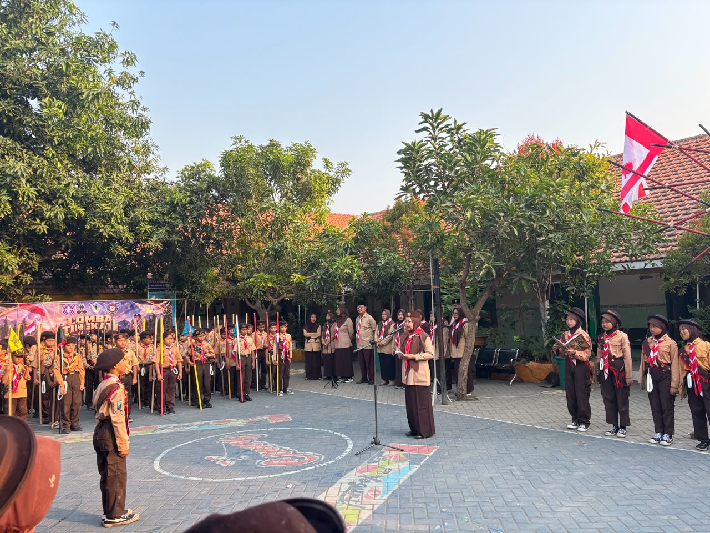

🔥 LT1 SDN Kebonagung 1 Sukodono: Serunya Berlatih, Bertanding, dan Mengasah Jiwa Pramuka
SDN Kebonagung 1 Sukodono kembali menghadirkan kegiatan kepramukaan yang penuh semangat melalui kegiatan LT1 (Lomba Tingkat 1) yang dilaksanakan pada 31 Juli 2026. Kegiatan ini menjadi salah satu momentum penting bagi peserta didik untuk belajar dan mengembangkan berbagai keterampilan kepramukaan melalui pengalaman yang menyenangkan, menantang, dan penuh kebersamaan.
Sejak kegiatan dimulai, suasana sekolah terasa berbeda. Para peserta tampak bersemangat mengenakan seragam Pramuka dengan penuh kebanggaan. Mereka mempersiapkan diri bersama regu masing-masing, memastikan perlengkapan, membangun kekompakan, serta mempersiapkan strategi terbaik untuk mengikuti berbagai perlombaan yang telah disiapkan oleh panitia.
Berbagai lomba dilaksanakan dengan suasana yang meriah dan kompetitif. Setiap regu berusaha menunjukkan kemampuan terbaiknya. Mereka belajar bahwa keberhasilan tidak hanya ditentukan oleh kemampuan individu, tetapi juga oleh kekompakan seluruh anggota regu. Komunikasi, kerja sama, ketelitian, keberanian mengambil keputusan, dan sikap saling mendukung menjadi bagian penting dalam setiap tantangan yang dihadapi.
Semangat peserta semakin terlihat ketika mereka menghadapi setiap tantangan. Ada yang harus berpikir cepat, ada yang membutuhkan ketelitian, ada pula yang menuntut kekompakan dan keberanian. Sorak-sorai dukungan dari teman-teman membuat suasana perlombaan semakin hidup. Meski terdapat persaingan, seluruh peserta tetap menunjukkan sikap sportif dan saling menghargai.


Bagi peserta didik, LT1 memberikan pengalaman berharga yang tidak selalu diperoleh di dalam kelas. Mereka belajar secara langsung melalui aktivitas nyata. Setiap permainan dan perlombaan mengandung nilai pendidikan yang mendorong peserta untuk menjadi pribadi yang lebih mandiri, disiplin, bertanggung jawab, kreatif, serta mampu bekerja sama dengan orang lain.
Tidak kalah penting, kegiatan ini juga menjadi kesempatan bagi peserta untuk membangun rasa percaya diri. Ketika berhasil menyelesaikan sebuah tantangan, muncul rasa bangga dan keyakinan bahwa mereka mampu melakukan sesuatu yang sebelumnya mungkin dianggap sulit. Sebaliknya, ketika mengalami kegagalan, peserta belajar untuk tidak mudah menyerah dan menjadikannya sebagai pengalaman untuk memperbaiki diri.
Nilai sportivitas dan pantang menyerah juga begitu terasa sepanjang kegiatan. Para peserta terus memberikan usaha terbaik hingga tantangan terakhir. Kemenangan memang menjadi sesuatu yang membanggakan, tetapi keberanian untuk mencoba, proses belajar, dan pengalaman bekerja bersama dalam satu regu merupakan bagian yang jauh lebih berharga.
Melalui kegiatan LT1 ini, SDN Kebonagung 1 Sukodono berharap semangat kepramukaan semakin tumbuh dalam diri peserta didik. Pramuka diharapkan tidak hanya menjadi kegiatan yang menyenangkan, tetapi juga menjadi wadah pembentukan karakter generasi muda yang berani, disiplin, bertanggung jawab, peduli terhadap sesama, serta memiliki semangat untuk terus belajar dan berkembang.
Kegiatan LT1 juga menjadi bukti bahwa proses pendidikan dapat berlangsung melalui berbagai pengalaman yang menarik. Dengan belajar sambil bermain, bertanding, dan bekerja sama, peserta didik mendapatkan pengalaman nyata tentang arti perjuangan, kebersamaan, tanggung jawab, dan sportivitas.
💚 Apresiasi untuk seluruh peserta!
Terima kasih kepada seluruh peserta didik yang telah mengikuti kegiatan
LT1 dengan penuh semangat. Terima kasih pula kepada para pembina,
guru, panitia, serta semua pihak yang telah mendukung terlaksananya
kegiatan ini. Semoga pengalaman selama LT1 menjadi kenangan indah sekaligus
bekal berharga bagi peserta didik untuk terus tumbuh menjadi generasi
yang tangguh, terampil, mandiri, dan berprestasi.
Salam Pramuka! ⚜️
SDN Kebonagung 1 Sukodono
Berani, Terampil, Kompak, dan Pantang Menyerah!